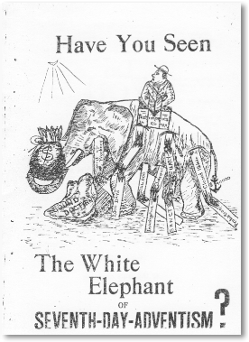

Have you seen the white elephant of Seventh-day Adventism?
By R. Vowless
Printed by P. F. Burrows Ltd. Eliot Street, New Plymouth. 8301. Published 1933
Do you know that probation closed in 1844, and now sinners are without an Advocate unless they belong to the Seventh-day Adventist Church. Well, that is what their church teaches in books written by their prophetess, Mrs. E. G. White, and endorsed by the Review and Herald (an S.D.A. denominational paper) as this tract discloses.
When I returned to the homeland from my field of mission work, some of the Seventh-day Adventist members became very enthusiastic that I join their Church, seeing I was, as yet, undenominational, although, being a sabbath‑keeper and holding largely the same doctrines as this sect teaches. Eventually I did join them, but later, while studying their doctrines further, I found that I must seriously disagree with their fundamental teachings on the 2,300 days, Sanctuary question, and the so‑called spirit of prophecy, although formerly, I had adopted them on face value.
As I was acting as elder for their church in New Plymouth, it behoved me as a conscientious Christian to abide by what they taught in interpreting the Scriptures to others. This I felt I could no longer do, for how could I teach another what I did not not believe myself? Whereupon, I sent my resignation in on the Monday to the district pastor at Hawera, Pastor L. R. Harvey, requesting a reply by letter or person, and mentioning that he was expected to come and take the service in New Plymouth the following Sabbath. judging from previous experience with this correspondent, I looked for the prompt reply which never came. The following Friday he called about 2 p.m., at a time when, as he ought to have known, I would not be at home. My wife told him I would be home at 4 p.m., but he said he could not wait, neither could he take the service the next day, which then fell to me to prepare. I there told the congregation of my disagreement and resignation.
Another whole week passed without a visit or note from Pastor Harvey, which I considered was pointedly unusual, for, previously, he always gave correspondence prompt attention.
The next Friday, a short note arrived to state that he would be there the following sabbath to take the service. I went, fully expecting that he would come in good time to have a private interview with me before the service. This he did not do, but arrived at 11 a.m. to take the service of that hour.
After the service he took us aside along with a stranger who knew nothing of the circumstances, and he read our letters of resignation in which we stated that we did not agree with the 2,300 days and kindred doctrines. The other brother did offer to give us some help on the "Spirit of Prophecy," but all Pastor Harvey did was to ask me if I was converted, or, if I only thought so, as he did not think I was. Prior to this, he must have known I was converted seeing he asked me to take the services for him previously. Doctrines are not the test of our conversion, anyway, but belief in Christ.
I wrote to the North New Zealand Conference Office of Seventh-day Adventists, telling them that I had resigned from the Church and to take note of the new Treasurer (for I had been Treasurer). I received an answer, stating that they had noted the address of the new Treasurer, but my resignation was ignored; no word of regret, or offer to show me my error or probable misunderstandings. Instead, Pastor Sharp was sent down not to seek out "the prodigal son', or "the lost sheep" (for be never came near me at all or sent any message to me) but to warn those that were left, of following after.
The first sabbath he was here, without ever coming to discuss the subjects in question, or to give any opportunity to agree (if it were possible) on such, he went to work to vote us off the Church roll. 'The objection was raised that we be given a church hearing as some felt it was unfair that they be asked to strike us off when they had nothing against us, or without trying to go after "the lost sheep " as the Master did. Finally, however, we were voted off.
On the Sunday night he gave a study on the Sanctuary in his church, but no invitation was extended to me to attend and learn there from. No, probably he was afraid I might ask an awkward question or two, which might prove embarrassing in front of his congregation, for I know I am not the first one he has met who has resigned for the same reasons, and one learns by experience.
I have mentioned the question of the 2,300 days five times to Pastor Harvey, but not once has he taken the subject up or helped me to see as they do, which he should be well able to do, seeing he has preached it for twenty years. I spoke my mind when I accidentally met him in the mart in New Plymouth, and told him what I thought of his actions in the whole situation. He tried to compromise with me by asking me why I could not have gone on preaching although I did not believe some doctrines. I know of some preachers who have admitted they do not believe all their church teaches, but in such circumstances I felt it my duty to resign.
For those who are wondering what has caused me to resign from the Seventh-day Adventist Church, I shall now reveal some of my findings in the following pages.
W. W. Prescott once stood up in a General Conference and said; - "We put on a sort of holy mask, and say things that we ourselves know were not exactly, true; and the brethren look soberly in our faces, and know that we are not saying it exactly as it is, and we keep looking soberly at one another, and saying things that we know are not exactly right; and the chairman makes explanations that he knows are are not exactly true; but it would hardly do to say it exactly as it is, and so the smiling is up the sleeve, and not on the countenance, and we go on with it."
MRS. E. G. WHITE: INFALLIBLE PROPHETESS
On February 7, 1871, their General Conference passed the following resolution:
"That we re‑affirm our binding confidence in the Testimonies of Sister White to the Church, as the teaching of the Spirit of God." (S.D.A. Year Book for 1914, page 253).
"Our position on the Testimonies is like the key-stone to the arch. Take that out and there is no logical stopping‑place till all the special truths of the Message are gone ..... Nothing is surer than this, (that the messages and visions (of Mrs. White) belong together, and stand or fall together." (Review and Herald Supplement, Aug. 14, 1883). (Message here, meaning S.D.A. Church).
Listen to this one by G. A. Irwin, General Conference President for many years" on page 1 of a tract entitled "The mark of the Beast," it reads:
"It is from the standpoint of the light that has come through the Spirit of Prophecy (Mrs. White's writings) that the question will be considered, believing as we do that the Spirit of Prophecy is the only infallible interpreter of Bible principles, since it is the Christ, through this agency, giving the real meaning of his own words."
"As with the ancient prophets, the talking is done by the Holy Spirit through her vocal organs. The prophets spake as they were moved by the Holy Ghost." (Review and Herald, Oct. 5, 1914).
" Think you that He would choose an inferior mouthpiece through whom to instruct the remnant church? On the other hand, as it is the greatest crisis of all ages, we should naturally expect that the mouthpiece God would use for this period would be inferior to none in the past ages." (Review and Herald, Aug. 26, 1915.)
What strong language, Mrs. White, not inferior to any of the prophets of the past, and therefore is on the same level as Moses, Isaiah, Daniel, Paul, and John!
The above will be quite sufficient to show the attitude of their church toward Mrs. White, though no end of such statements could be given. We shall now see what Mrs. White claims for her own writings.
In ancient times God spoke to men by the mouth of prophets and apostles. In these days He speaks to them by the testimonies of His Spirit." (Testimonies, vol. 5 : 661).
Yet, now when I send you a testimony of warning and reproof, many of you declare it to be merely the opinion of Sister White. You have thereby insulted the Spirit of God. (Testimonies, vol.5: 64).
"In these letters which I write, in the testimonies I bear, I am presenting to you that which the Lord has presented to me. I do not write one article in the paper expressing merely my own ideas. They are what God has opened before me in vision—the precious rays of light shining from the throne." (Testimonies, vol. 5 : 67).
"If you seek to turn aside the counsel of God to suit yourselves; if you lessen the confidence of God's people in the Testimonies He has sent them, you are rebelling against God as certainly as were Korah, Dathan and Abiram." (Testimonies, vol. 5: 66).
And many other such-like statements from her own pen could be used. Now let us look in the Scriptures for the test to be applied to a prophetess. Gal.1:8, reads: " But though we, or an angel from Heaven, preach any other gospel unto you than that which we have preached unto you, let him be accursed." Revelation, 22 : 18,19: ....... if any man shall add unto these things, God shall add unto him the plagues that are written in this book ; and if any man shall take away from the words of the book of' this prophecy, God shall take away his part out of the book of life, and out of the holy city, and from the things that are written in this book." Keeping these Scriptures in mind, we shall compare them with Mrs. White as we proceed further.
CLOSE OF PROBATION IN 1844
On looking into a book called Early Writings, by Mrs. E. G. White, which contains the fundamental teaching of the S.D.A. Church, and which is found in the majority of Adventist homes, we find such teachings as the following:
"The Holy Ghost was poured out upon us, and I was taken off in the Spirit to the city of the living God. Then I was shown that the commandments of God, and the testimony of Jesus Christ relating to to the Shut Door, could not be separated (The Spirit of Prophecy by Mrs. White, is just as often called the testimony of Jesus Christ), and the time for the commandments of God to shine out with all their importance, and for God's people to be tried on the sabbath truth, was when the door was opened into the most holy place of the heavenly sanctuary, where the ark is, in which are contained the ten commandments. This door was not opened until the mediation of Jesus was finally established in the holy place in the Sanctuary in 1844. Then Jesus rose up and shut the door of the holy place, and opened the door into the most holy and passed within the second vail, where he now stands by the ark and where the faith of Israel now reaches." (Early Writings-42. This vision was given on March 24, 1849).
Jesus has risen up and shut the door of the holy place of the heavenly sanctuary, and has opened the door of the most holy place and entered in to cleanse the sanctuary." (E.W., 250).
"The Lord has shown me in vision, that Jesus rose up, and shut the door and entered the holy of holies at the 7th month, 1844- "(Vision of Mrs. White in "A Word to the Little Flock," page 12).
"What may we suppose the shutting of the door to denote? By this act is undoubtedly denoted the exclusion from all further access to saving mercy, those who have rejected its offer during the time of probation ... But can any impenitent sinners be converted if the door is shut? of course they cannot, though changes that men would call conversions may take place." (Review and Herald, Sept. 16, 1861, by A. Hale and endorsed by James White). (James White was Mrs. E. G. White's husband).
"When we come to that point of time (the tenth day of the seventh month, 1844) all our sympathy, burden, and prayers for sinners ceased, and the unanimous feeling and testimony was that our work for the world was finished for ever.
...... He is still merciful to His saints and ever will be. Jesus is still their advocate and priest. But the sinner ....... was left without an advocate when Jesus passed from the holy place and shut the door in 1844." (James White in " Present Truth," page 79 ‑ May, 1850).
"I was shown what did take place in heaven at the close of the prophetic periods in 1844. As Jesus ended his ministration in the holy place, and closed the door of that apartment, a great darkness settled upon those who had heard and rejected the messages of His coming, and they lost sight of Him." (E.W., 251).
"Satan appeared to be by the throne, trying to carry on the work of God. I saw them look up (those outside the door after it closed) to the throne, and pray " Father, give us Thy Spirit." Satan would then breathe upon them an unholy influence; in it there was light and much power, but no sweet love, joy, and peace." (E.W., 56). (Words enclosed mine).
The above statements show the teaching that probation closed in 1844; but let us now see what she says becomes of those who are shut out.
"The light behind them went out leaving their feet in perfect darkness, and they stumbled and got their eyes off the mark and lost sight of Jesus, and fell off the path down into the dark and wicked world below. It was just as impossible for them to get on the path again and go to the city, as all the wicked world which God had rejected." ("A Word to the Little Flock," a vision by Mrs. White, page 14).
It was impossible for them to get back, for according to the above divine revelations," probation had closed in 1844 , as we shall see again.
"The enemies of the present truth have been trying to open the door of the holy place, that Jesus has shut, and to close the door of the most holy place which He opened in 1844‑" (E.W., 43).
The "present truth" referred to here, was that which " they " were teaching at that time, and the "enemies," were all others. Probation had closed for the latter, therefore it was no use them trying to open the door for Jesus has shut it against them; so what do these do' that were shut out? Mrs. White will tell you in E.W., 274 :
"I saw that since Jesus left the holy place of the heavenly sanctuary, and entered within the second vail, the churches have been filling up with every unclean and hateful bird. I saw great iniquity and vileness in the churches; yet their members profess to be Christians. Their profession, their prayers, their exaltations, are an abomination in the sight of God. Said the angel " God will not smell in their assemblies."
"Then I saw that Jesus prayed for His enemies; but that should not cause us or lead us to pray for the wicked world, whom God has rejected when He prayed for His enemies, there was hope for them and and they could be benefited and saved by His prayers, and also after He was a mediator in the outer apartment for the whole world; but now His Spirit and sympathy were drawn from the world; and our sympathy must be with Jesus and must be withdrawn from the ungodly......I saw that the wicked could not be benefited by our prayers. Then, I saw concerning loving our neighbours. I saw that Scripture did not mean the wicked world whom God had rejected that we must love, but He meant our neighbours in the household, and did not extend beyond the household." (From "The Camden Vision;" Camden, N.Y., June 29, 1851—Signed, E. G. White).
My brother, my sister, can you believe such a self‑righteous teaching? Can you believe that Christ has withdrawn Himself from' you and your neighbours? Well, this is what S.D.A. books teach, written by their prophetess; and every S.D.A, member must endorse such a wicked teaching for they must accept Mrs. White's writings as "precious rays of light shining from the throne of God," or divine revelations.
SLAVEMASTERS OF U.S.A. TO RECEIVE THE SEVEN LAST PLAGUES
In referring to the slave‑masters of U.S.A., Mrs. White says;
"I saw the pious slave rise in triumph and victory, and shake off the chains that bound him, while his wicked master was in confusion, and knew not what to do; for the wicked could not understand the words of the voice of God." (E.W.—35).
"God will restrain His anger but little longer. His wrath burns against this nation, and especially against the religious bodies that have sanctioned this terrible traffic and have themselves engaged in it. Such injustice such oppression, such sufferings, are looked upon with heartless indifference by many professed followers of the meek and lowly Jesus." (E.W.-275).
"I saw that the slave‑master will have to answer for the soul of his slave whom he has kept in ignorance; and the sins of the slave will be visited upon the master. God cannot take to heaven the slave who has been kept in ignorance and degradation knowing nothing of God or the Bible, fearing nothing but his master's lash, and holding a lower position than the brutes. But He does the best thing for him that a compassionate God can do. He permits him to be as if he had not been while the master must endure the seven last plagues, and then come up in the second resurrection, and suffer the second, most awful death. Then the justice of God will be satisfied." (E.W., -276).
It might have been alright for Mrs. White to say in 1844 that the slave‑master was going to endure the seven last plagues, for, she expected Christ to come in 1851. But now it is 1933, what have they to say now.
Turning to the Bible again, I read: "God who at sundry times and in divers manners spake in times past unto the fathers by the prophets," Hebrews 1:1; and " For the prophecy came not in old time by the will of man: but holy men of God spake as they were moved by the Holy Ghost," 2 Peter, 1: 21.
I do not know how the S.D.A.'s interpret the above Scriptures; for, Mrs. White, the prophetess of the remnant church, is recognized, as, perhaps, one of the world's greatest plagiarists. Let anyone compare the "The Great Controversy," by Mrs. E. G. White, with book entitled "History of the Reformation," by D'Aubign'e; "The History of Protestantism," by J. A. Wylie; " History of the Waldenses," by Wylie; " History of the Sabbath," by Andrews; and "Sanctuary," by Smith. Then they will soon see where her inspirations came from. Also, it would be found interesting to compare her first edition of "The Great Controversy" with the last edition, a very marked difference will be found in thought and expression. The criticism was so strong against her plagiarism that she was forced to make the alterations.
"Patriarchs and Prophets" by Mrs. E. G. White, received some wonderful help from Adam Clark's Commentaries as we cannot help but notice when comparing the different paragraphs. It is now becoming a well‑known fact that "Steps to Christ " was written by Miss Fanny Bolton, without any dictation or assistance whatever from Mrs. White—yet it carries Mrs. White's name. Is this in keeping with the eighth commandment? Some people think if they keep the fourth, it does not matter so much about the others.
Some of their pastors say that "all the critics of Mrs. White could not put together one chapter of "Desire of Ages" by the same author." No, perhaps not, and it is very evident that Mrs. White was not able to produce many of them, or, in fact, any of them. "Desire of Ages " was culled from other authors on the "Life of Christ," special mention may be made of Geikie's —Life of Christ." Again, it is interesting to compare her first edition of " Desire of Ages" with the latter and again notice the changes in thought and expression ; and even as late as 1926, "Desire of Ages" was undergoing another revision. I trust that Mrs. White's critics are more honest than to copy the words of another author's pen in order to write a chapter of "Desire of Ages."
We hear so much about her Health Reform Teachings, but they do not mention that the teachings were taken from three other doctors' books written by Drs. Cole, Jackson, and Thrall.
In 1883 she published "Sketches from the Life of Paul," and in the preface there was found this statement:
"The writer of this book, having received special help from the Spirit of God, is able to throw light upon the teachings of Paul and the application to our own time, as no other authors are prepared to do."
This book was copied so strongly from "Life and Epistles of the Apostle Paul," by Conybeare and Howson, that Conybeare and Howson served notice upon "The Review and Herald Publishing Association," that, unless the book was taken off the market, they would bring a suit against them for plagiarism. Mr. H. W. Kellogg who was then manager of the Publishing House, informed Mrs. White that they would not undertake to publish any more copies of such, unless she would stand for the responsibilities of meeting the threatened suit. Needless to say, no more have been printed and her order for a new edition, which had just been previously booked was withdrawn.
Dr. Stewart published a booklet of eighty‑nine pages in which he arranged parallel columns of quotations taken from Mrs. White's book, 11 Sketches from the life of Paul," and the book by Conybeare and Howson just mentioned, and the quotations read like this: (Conybeare and Howson's) " The judges sat in the open air, upon seats hewn out in rock, on a platform which was ascended by a flight of stone steps immediately from the Agora." (Mrs. White's) : "The judges sat in the open air, upon seats hewn out in the rock, on a platform which was ascended by a flight of stone steps from the valley below.
In the preface, where it is said ............ having received special help from the Spirit of God .......," why did they not speak the truth and write " ....... having received special help from Conybeare and Howson "?
As this is only and introduction to some of the things which 1 have found out, I shall not say more here about this wicked plagiarism which is put down as the "Precious rays of light shining from the throne of God." And I would never dare say or intimate that God was a plagiarist, would you?
SUPPOSED "PRECIOUS RAYS OF LIGHT" PROVES USEFUL FOR MONEY‑MAKING
The prophets of the Bible were generally hard‑working people, and had little. Mrs. White says, "we entered upon out work penniless." (Test. V.1-75). (We, being Mrs. White and her husband). This point is often brought up by S.D.A.s., but that is as far as they ever say. Why do they not say further? Perhaps it is because of the following:— Soon after they began and became leaders, they commercialised their work and managed to supply themselves well, and when Mr. White died (1881, it is said that he left between 15,000 dollars and 20,000 dollars; for the present, I do not need to show how this was made, but let me quote a couple more of her writings : "If there is one work more important than another, it is that of getting our publications before the public, thus leading them to search the Scriptures." (Test. V.4-390). You should lend "Spirit of Prophecy" to your neighbours, and prevail upon them, to buy copies for themselves. Missionaries for God, you should be earnest, active vigorous workers." (Test. V.4.-391)."Many are going directly contrary to the light which God has given to his people, because they do not read the books which contain light and knowledge in cautions, reproof............so precious, coming from the throne of God, is hid under a bushel. God will make His people responsible for this neglect." (Test. V.4.-391).
So, of course, her books were pushed and sold in large numbers, and as a result, she received large financial returns through receiving royalties on everything she has written. Her royalties received from one publishing house alone, in Washington, D.C., in the year 1911, amounted to 8,000 dollars, which was more than the net profits for the publishing house itself for that year. From one book alone she received over 40,000 dollars, and from all her books over 100,000 dollars up till her death in 1915, and they are fixed that since her death her son is to receive the royalty and still is. Think of it, God giving revelations to anyone to sell to the people! I wonder how much royalty Moses, Isaiah, .Jeremiah, Daniel, Paul, and John and the others received, that is, comparing them with Mrs. White as the Conference does.
A PROPHETESS'S INDEBTEDNESS
No, we will not leave the financial side of the question here, but will read some more of her writings as follows: — "Debts must not be allowed to accumulate term after term. The very highest kind of education that could be given, is to shun the incurring of debt as you would shun disease." (Test.V.6-211). Further, should shun debt as we would shun leprosy," (Test. V.6,-217). Very good, but why if such was the precious light that shone from the throne, did she die 90,000 dollars in debt, and practically all this was in the form of notes given for borrowed money? Her total assets amounted to 60,000 dollars, though the Conference paid 87,000 dollars for them, thinking it would cover her indebtedness. She borrowed money from about sixty individuals and institutions, thus making an average of' amount of 1,500 dollars each. Many more startling facts could be given here but this is sufficient for the time being to convince whether she was a prophetess or not.
When some of' the S.D.A. pastors are cornered upon this indebtedness, they try to smother it up by saying it went into the work in various ways; .but this is not the case for it has leaked out from the best. of authority that 60,000 dollars of it went to pay off one of her son's bad debts, and it is reported that the General Conference has had to pay off another 60,000 dollars of such indebtedness since Mrs. White's death.
A few years ago, I came across a paper mentioning that the same Mrs. White died a bankrupt woman, but I could not find out any more until just recently when I read an article written in an American paper by the editor of "The Gathering Call," Riverside, California, September 1932. A footnote was included asking for anyone who is interested in this to write to him and he will give further particulars including particulars of some startling statements in her will. I have since then seen this indebtedness endorsed by other writers, although their publications were written earlier, some dating back to 1919. If this is not correct, may I ask why it is that the General Conference of Seventh Day Adventists is not publicly denying such to be true? I, myself, think, that it is because her indebtedness is like her plagiarism and cannot be denied, otherwise it seems strange that such statements can be published in papers and sent world-wide without a denial or a libel issued against them. I believe that most people will think the same as, I do about this.
MEMBERS EXCOMMUNICATED FOR FOLLOWING THE STEPS OF MRS WHITE.
Late in 1924, W. A. Spicer, then world ' President of Seventh Day Adventists, announced that one of the professed successors of Mrs. White, a Mrs. M. W. Rowen and her followers, had been excominunicated from the denomination for teaching that probation ended Feb. 6, 1924, and that Christ would come on Feb. 6, 1925.
Why should not Mrs. White and her followers likewise have been excommunicated for teaching that probation closed 1844. And that Christ would come seven years later in 1851? I wonder if Mr. Spicer would explain.
WAS CHRIST A SINNER AND IS GOD BLAMEABLE FOR MAN"S SIN?
In John 9: 24, we read where the Jews said that Christ was a sinner. The following statement is taken from the Review and Herald, May 1, 1894 :‑
"As sin increased, and men sank lower in degradation (sin), Christ went lower and lower in His humiliation, until there was no lower depth that He could reach, in order to lift man from his moral degradation." (From an unpublished private testimony by Ellen G. White). "But shall we take license by such humiliation of our Lord to reach us in our state of degradation, and to restore in us the image which lie implanted in His creatures at creation, but which we have lost to continue in those sins ...... Man had become exceeding sinful, and by the taking of the life of animals and the eating of their flesh food, he became still more bloodthirsty, until he came to regard human life with astonishing indifference. If Christ had held himself aloof from them and had not stepped down with them in flesh‑eating, he could not have saved those, who, through ignorance of the truth, thus indulged their appetites .... therefore, God now (since the flood) places in the hand of man, by permitting him to eat animal food, that which will bring upon himself the curse."
If we analyze this we find the following: 1‑Flesh‑eating is degrading. 2‑It causes those who eat it to become "still more bloodthirsty." 3-"And to regard human life with astonishing indifference." 4‑It brings "the curse upon man." Christ, in order to save those who, thus" sinned, "had to step down" and join them in this degrading and bloodthirsty sin. 5-" If Christ had not stepped down with them in flesheating, He could not have saved them."
What a monstrous statement to make. What a charge to bring against Christ. If there is anything in this S.D.A. argument we must come to the following conclusions : that in order for Christ to reach, or save the thief, the murderer, or the adulterer, it would have been necessary for Him to have "stepped down" and committed those sins also. What madness to go to, to sustain Mrs. White's unscriptural teachings.
INVESTIGATIVE JUDGMENT AND INSPIRED DATES
Now, while the good elders and pastors are on the job explaining all this about "Probation being closed in 1844," "the collecting of royalties for divine revelations from God, and including, if they can, some idea as to how much in royalties Moses, Isaiah, Jeremiah, Daniel, Paul, and John received out of theirs," " the prophetess's indebtedness at death," "plagiarism," and other questions in this, including "Christ's flesh‑ eating, and God being responsible for man's degradation by placing in his hand that which brings upon himself the curse;" also would they explain something about this expression : "The Investigative judgment,"
I have read of the " day of judgment," " righteous judgment," " the judgment of the quick and the dead," and other judgments, but I have not read anything in the Bible about an "Investigative Judgment ......... I know Mrs. White says that Jesus is conducting an "Investigative judgment " to ascertain which of the descendants of Adam are worthy of eternal life. He has been there eighty‑eight years (1844‑1932) finding out whether God did right in destroying the Antediluvian world, Sodom and Gomorrah, Ananias and Saphira, and all the others up to 1932, or the present time.
Genesis 6: 5, and other Scriptures tells that God even knew their evil thoughts, so surely God would know what He was doing when He destroyed them. So what is this Investigative Judgment about, is it that Christ doubts His Father and has to make investigations into such matters?
And why were William Miller's and Mrs. White's divinely endorsed dates of 508‑ 538, 1798 and 1844, been altered by the Conference Committee at Washington to 503, 533, 1793 and 1838? It is true that 1798 and 1844 are still carried, possibly as a sop to conservatives, but these new dates are a part of the diagram. This never occurred before ‑why now? Start asking your good elders questions about these dates and you will find them doing similar to the good elder Stevens, of Detroit, who went limping from the platform when someone put such questions to him. If this proves too embarrassing for them to answer, then write a line to Washington asking them to send you the Committee report, and turn to page 265 and see for yourselves.
Then they could also give a little advice upon the Reform Dress with its long pants which was given by "divine revelation" through Mrs. White; and a little information to the good housewives upon the "divinely endorsed " washing machine.
These are only a few quotations and statements which can be given to show you how ridiculous it is to believe that her visions were of God.
VISIONS: RESULT OF NERVOUS DISORDERS
Some of my readers may be troubled with the question as to how woman, who evidently at first, conscientiously thought she was being used of God could practice such deceptions, that is, in her plagiarism and in saying she saw a thing in vision when she was previously inform by some other agents.
In answer I would say that no doubt she was a self-deceived woman, and abundant proof can be had from medical authorities to show that her visions were one of many symptoms she manifested which show that she was suffering from a nervous disease—the result of her misfortune of being hit the face with a stone in her childhood, the blow was so severe that caused her to lay in a stupor for three weeks.
One writer who knew her personally affirms that he knew four other S.D.A. women who had similar visions. All were sincere Christians a fully believed in their own visions but they were all sickly, nervous and hysterical. Mrs. White continually says in her own writings that her health was very poor and at times she was afraid she would lose her reason. She says in her own words " in the night I have awakened my husband, saying, 'I am afraid I shall become an infidel."' If she was sure her visions we of divine origin, why should she be, afraid that she would become infidel?
It can often be noted also that she often mentions being very sick just previous to having a vision.
Physicians who attended her when she was a patient in the Sanitariums who have had abundant opportunity to examine her and the testimony of such men as Dr. Fairfield. Dr. William Russell and Dr, J. H. Kellogg is that since they have observed her during a period of years and knowing her history from the beginning, they have no doubt but what she was subject to hysterical trances. Dr. J. H Kellogg who was brought up in her home and who was in later years head physician at the Battle Creek Sanitarium says he was compelled in the end to lose faith in her visions even though it was against his best interests renounce them.
In Dr. George B. Wood's " Practice of Medicines," page 721, v0I we read the following description of a disease from mental disorders :‑
"Ecstasy is an affection in which, with a loss of consciousness existing circumstances and insensibility to impression from without, there is an apparent exaltation of the intellectual or emotional functions, as if the individual were raised into a different nature, or different sphere of existence. The patient appears wrapped up in some engrossing thought or feeling, with an expression upon his countenance as of lofty contemplations or ineffable delight..... Upon recovering from the spell, the patient generally remembers his thoughts and feelings more or less accurately, and sometimes tells of wonderful visions that he has seen, of visits to the regions of the blessed, of ravishing harmony and splendour, of inexpressible enjoyment of the senses or affections."
And Dr. G. Durand, M.D., Ph.D., member of the American Medical Association and Fellow of the New York Academy of' Medicine, in describing ecstasy and catalepsy, says : —
"It often happens that the two diseases alternate or co-exist. In ecstasy the limbs are motionless but not rigid. The eyes are open, the pupils fixed, the livid lips parted in smiles, and the arms extended to embrace the beloved vision. The body is erect and raised to its utmost height, or else is extended at full length in recumbent posture. A peculiarly radiant smile illuminates the countenance, and the whole aspect and attitude is that of intense mental exaltation. Sometimes the patient is silent, the mind being apparently absorbed in meditation, or in the contemplation of some beatific vision. Sometimes there is mystical speaking or prophesying, or singing, or the lips may be moved without any sound escaping usually there is complete insensibility to external impressions. Ecstasy is often associated with the religious monomania. It was often quite common among the inmates of convents, and is now not unfrequently met with at camp-meetings and other gatherings of a similar nature. Many truly devout people are ecstatics."
Dr. Robert's " Theory and Practice of Medicine," pages 393, 394, in speaking of such mental diseases, says: " There appears to be a complete stoppage of respiration, or the patient appears to hold his breath."
These statements favourably compare with Elder Loughborough's description of Mrs. White's condition in vision in his book " Rise and Progress of Seventh Day Adventists," page 94: " For about four or five seconds she seems to drop down like a person in a swoon, or one having lost his strength, she then seems to be instantly filled with superhuman strength sometimes rising once to her feet and walking about the room. There are frequent movements of the hands and arms, pointing to the right or left as her head turns. All these movements are made in a most graceful manner. In whatever position the hand or arm may be placed, it is impossible for anyone to move it. Her eyes are always open, but she does not wink; her head is raised and she is looking upwards, not with a vacant stare, but with a pleasant expression, only differing from the normal in that she appears to be looking intently at some distant object. She does not breathe, yet her pulse beats regularly."
If space allowed many more statements could be given from medical authorities upon the diseases of Hysteria, Catalepsy, Epilepsy, and Ecstasy which are all nervous diseases often co‑existing or blending together. These statements would correspond precisely with many statements from her own pen.
The above explanation is given to show that her deceptions can be accounted for without impeaching her moral character, and I with others, am glad to account for it in this way.
Part Two of the White Elephant of Seventh-Day-Adventism: 2300 Days of Daniel 8:14 by Vowless.
Sections
Robert K. Sanders, Founder and Editor of Truth or Fables, 1997–2012
Life Assurance Ministries assumed ownership of Truth or Fables in 2012
© 2016 Life Assurance Ministries. All rights reserved.
